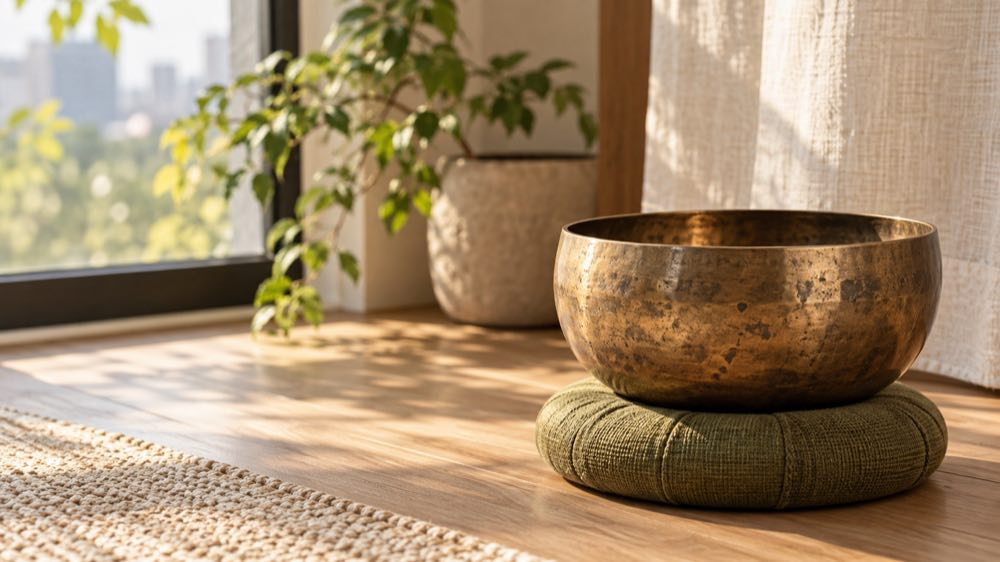
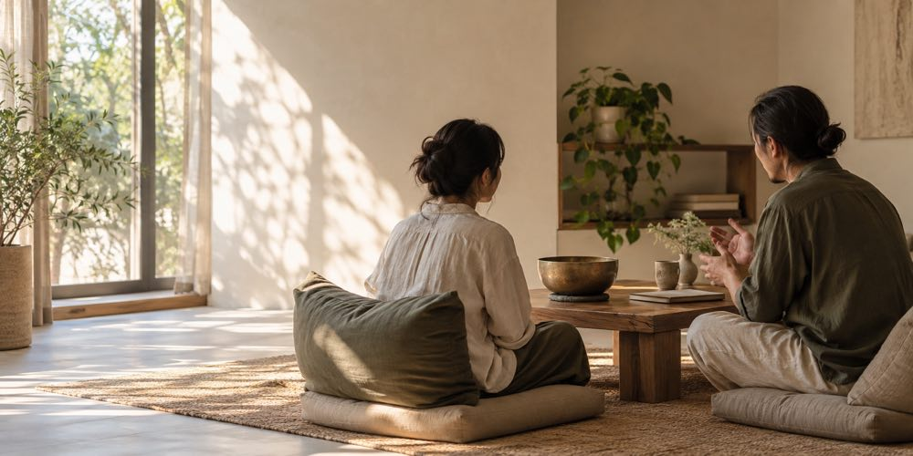
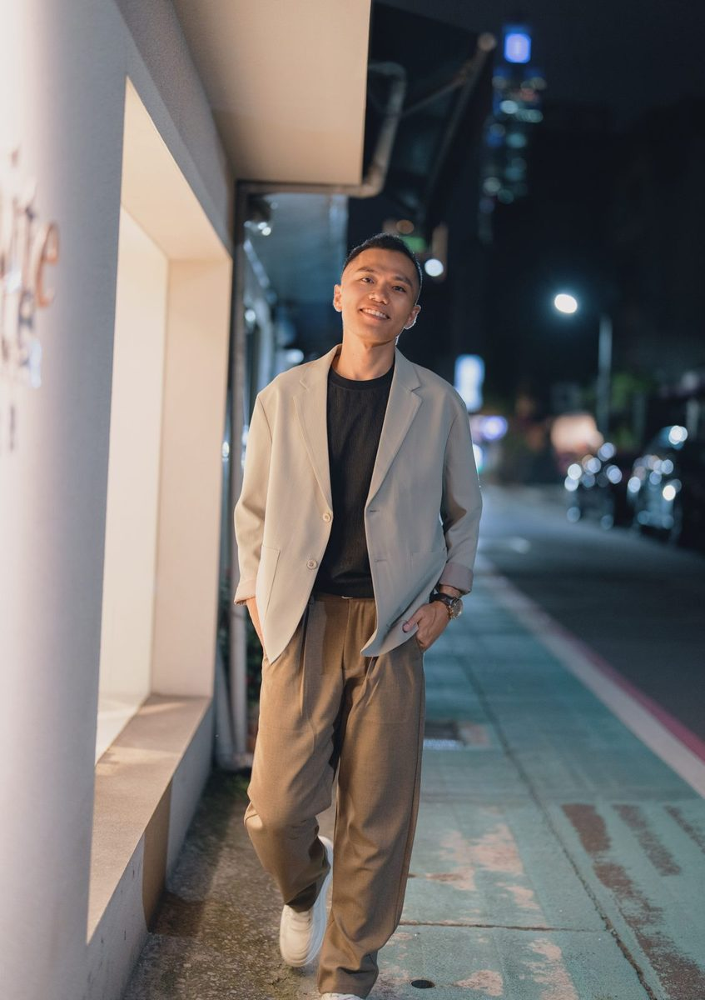

一場聲音與對話交織的體驗，陪你穿越卡住的地方，重新看見自己的下一步。
加入 LINE，聊聊再說這不是紓壓按摩，也不是聊天。
覺得哪裡卡住了，卻說不清楚是什麼——
不是要幫你解決問題，而是想陪你看見真實透過聲音的振動與一場真誠的對話，讓堵住的地方重新流動，從迷茫裡看見方向，找到願意踏出的下一步

先讓頌缽的聲音陪身體慢下來，再透過深度對話，梳理心裡真正卡住的地方。
從感受出發，一起看見你此刻的需要，帶著一個更清楚、願意踏出的下一步離開。
看看體驗怎麼進行如果你願意，可以先聽一小段缽聲。錄音僅供參考，現場感受會不同。
每個人的感受都不同。這裡收錄體驗者分享的片段與原始訊息。
以前聽覺敏感、做過的舒壓方式讓我痛過，一開始很擔心。這次接受頌缽，卻放鬆到睡著，回家也一夜好睡。
聲音繞過耳朵的瞬間，緊繃的神經慢慢鬆開。結束後不是亢奮，而是專注力提升的清醒。
點選圖片，原圖會向下展開；再點一次即可收起。
感受因人而異，以上為個人經驗分享，非醫療效果。
正站在人生的十字路口，一時看不清下一步
常常想很多，卻很難真正安靜下來感受自己
渴望被真正聽懂，而不是被急著給建議
相信真實比正確更重要，感知比分析更根本
先聊聊你現在卡在哪裡，為什麼是現在想來。
頌缽的振動陪你放下不停轉動的思緒，回到身體與呼吸本身。
用簡單而誠實的對話，梳理出一個你真正願意帶走的方向。

在開始做頌缽之前，常跟朋友找我聊天，有時可以聊1-2小時。
聊到後來，有人會停下來說：「我好像知道下一步要做什麼了！」
那時我才發現，我擅長的不是給建議，是陪人把自己的聲音聽清楚。
缽日就是從這裡開始的：先讓頌缽的聲音陪身體安靜下來，再用對話一起看見卡住的地方。
目前在台北以一對一頌缽對談為主，也有小班團體場。
我不是站在山頂的導師
而是正在爬山、同時回頭拉人的人
很多人講出自己困惑的那一刻，答案其實早就在心裡。
只是平常外面太吵，很難好好聽見自己的聲音。如果你也願意練習，
歡迎加入「魔法師團-人生自我調頻」，一起練習聽自己，也聽見彼此。